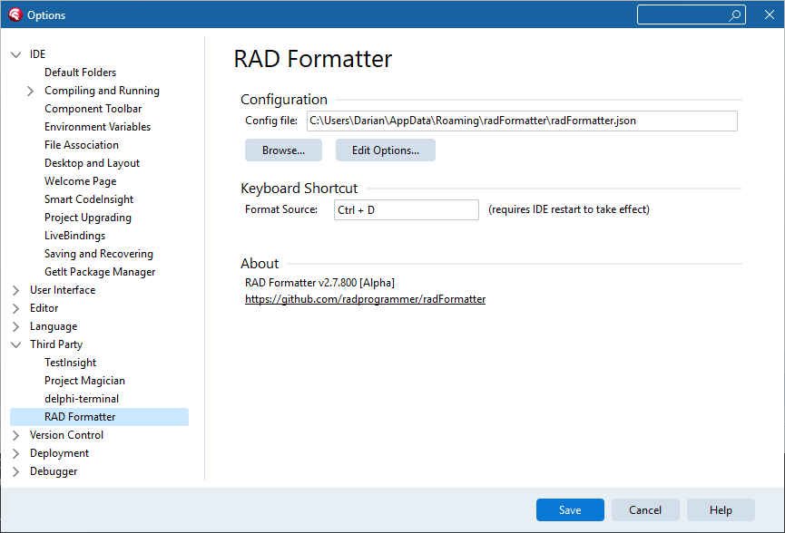

Press Ctrl+D and the current unit is formatted in place — or select a block first and only the selection is formatted. Same engine, same config file, and the same guarantee as the CLI: non-destructive, validated, and fully offline.
One installer covers every supported IDE: 2010XE–XE810.x111213 Florence

Tools > Options > Third Party > RAD Formatter
The plugin configures like any well-behaved IDE citizen. One options page shows the active config file, lets you Browse to a different one, and opens the full configuration editor with Edit Options.
radFormatter.json — commit one config and the editor,
the command line, and CI all format identically.The configuration editor is a split-screen playground: your editable source on the left, the formatted result on the right. Change any option and the preview reformats instantly, so you can watch exactly what each setting does — across tabs for casing, spacing, indent, line breaks, reshaping, alignment, and output.

Live preview: edit source on the left, see the formatted result on the right
radFormatter.exe uses the identical file format.The plugin runs the same formatter kernel: every format is validated with a content hash and token fingerprint before it touches your editor buffer, and the plugin makes no network connections of any kind — no telemetry, no license phone-home. The plugin and its installer are code-signed.
Community Edition is free for the current release of RAD Studio: Ctrl+D formats with the built-in Embarcadero style, and the full config editor is included for exploring options and editing config files (its saved configs drive the CLI and paid editions). Pro unlocks your own configuration and your choice of IDE versions; Enterprise covers every supported version, per user or site-wide.